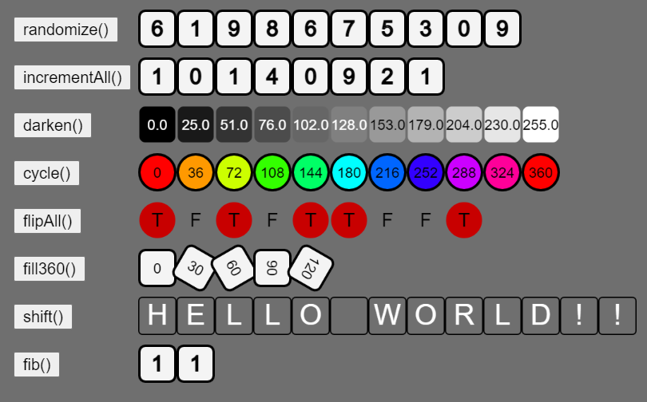

Open the Looping through Arrays workspace in CodeHS. If you run the program, you'll see that it's set up as a series of buttons, each associated with an array of values. There are arrays of numbers, boolean values, and characters, all interpreted in different ways. When a button is pressed a corresponding function in the sketch is called, passing its array in as a parameter, giving each function a chance to make changes.
Click the button below to see what randomize should do. If you hit "R", it will reset to its initial state (resetting is not a requirement for you)
The randomize() button matches up with the randomize function that is already in the sketch:
function randomize(arr){
}
The parameter given to this function, arr, is the array of values that appears next to it. Your job will be to make changes to the array, which should appear on the canvas. The randomize() function is about putting random values into the array, so modify it to be like the following:
function randomize(arr){
arr[0] = floor(random(10)); //assign a random integer to the first location of arr
}
This one line of code uses square bracket notation to modify index 0 of the parameter arr, assigning it to be a random number. Run the sketch and hit the randomize() button. Hopefully you will see the first value randomizing each time that you hit it.
The above code effectively modified a single value of the array, but when dealing with arrays you often need to think about processing an entire array of values and avoid the too-much-copy-paste solution. For the randomize() function to randomize each location in the array, the too-much-copy-paste solution would be like so:
arr[0] = floor( random(10)); arr[1] = floor(random(10)); arr[2] = floor(random(10)); arr[3] = floor(random(10)); //No, this is not a full-credit solution. arr[4] = floor(random(10)); arr[5] = floor(random(10)); arr[6] = floor(random(10));
This solution does visit every location, but it is inelegant. Arrays are perfect for looping through because we can represent the index as a looping variable:
- it starts at zero
- It increases by one each time
- It is only used on valid indices
for( let index = 0; index < arr.length; index += 1)
Why index < arr.length?
When thinking about the too-much-copy-paste solution, it would also work to say index < 7 as the condition, but that is a solution that is specifically catered to the sample data that we're working with, where the size of the array is 7. If we gave it an array of a different size we would start to have problems. Instead of using a literal value, we can access the array's length variable using arr.length. This change makes the loop something that you can use to represent every index in any array, and not just one with exactly 7 values.
This means that the elegant form of demo()'s solution would look like this:
for( let index = 0; index < arr.length; index += 1){
arr[index] = floor(random(10));
}
By using our index loop and then assigning values to arr[ index ], we are able to write code that affect every index of the array.
Make this change in the demo function of your sketch and try it out. All 8 values should randomize on every press.
for( let index = 0; index < arr.length; index += 1)
This loop is effective for writing generic code that affects every location in an array. To earn full credit, each function that you write today should use this loop to help make certain that every location in the array is reached. Any solutions that use a copy-paste heavy strategy will not earn full credit.
The incrementAll() function's purpose is to increase each value in the array by one. This time you will still be using a for loop to changing the value at each location, but this time the new value in the array is related to the old one. Keep in mind that as you're looping through the array you may use the location arr[index] as you would most variables. So you can choose your favorite way of incrementing:
arr[index] = arr[index] + 1;
or
arr[index] += 1;
or
arr[index]++;
Test your incrementAll() function by hitting the button a few times and making sure that every location increases by one each time it's pressed
The values of the darken() function are all numbers between 0 and 255. These values are used as the brightness value of the square at each location. The darken() function's purpose is to make each location darker by decreasing its value by 10%. This means that we'll have to go to each location and replace it with 90% of its current value.
Using the Array Index for Loop, replace each value in the array with 90% of its current value, which can be calculated by multiplying the current value by 0.9
When you run the sketch and hit the darken() button, each value should get closer to zero, but never pass it. Numbers that are closer to zero will not decrease by as much as those that are larger.
The array associated with the cycle() function is being interpreted as the hue value of the corresponding circle, but it is still just a number. A hue value is related to an angle, meaning that its range of values is between 0 and 360.
The cycle function's job will be to increase the value at each location by 3, but to wrap the value back around to zero when it passes 360. If done properly, pressing the button repeatedly will cause each location to be perpetually cycling through every color.
When you're confident that your cycle() function works properly, paste it below.
The array associated with the flipAll() function is boolean values: true or false. The purpose of the flipAll() function is to use the Array Index for-Loop to replace each location in the array with its opposite value true-> false and false -> true.
This problem looks simple, but can be tricky. A common problem occurs when students attempt to use two separate if statements to perform the flip. They accidentally write code that may trigger both if statements. In the end, all values are true or all values are false. The solution is to use a proper else statement to make sure that each location is set either to true or to false, but never both.
When you're confident that your flipAll() function works properly, paste it below.
The fill360() function has an array that starts out with an incomplete angle based pattern. Your task will be to write code that will complete the pattern, assigning values to the rest of the indices until the last value of 360 is placed at index 10.
This time you are writing code that intends to extend the size of the array. You should modify the Array Index for-Loop so that it doesn't rely on arr.length. Instead the loop should keep going until index has reached ten, or while index <= 10. Making this change will force the index to be 0 through 12, and the array will expand to fit any index that you assign to.
This time we are adding new values to the array, meaning we cannot use arr[index] += ____; The += operator will return NaN if the original value doesn't exist.
Instead it is recommended that you use an extra counting variable to represent the values that you are assigning to the array. Declare it as a 0 before the loop begins, and increase it by 30 each iteration. That way you will have a variable that represents the 'current' value, and will just have to assign it to the current location of the array.
Test your function by running the sketch and hitting the fill360() button. If done properly the pattern should extend all the way to 360.
When you're confident that your fill360() function works, paste it below.
The shift() function's array is made up of letters, but it doesn't matter because the shift() function's purpose is to move all the values to the 'left', meaning the value at each index gets assigned the value from one index higher.
To do this manually would look like this:
arr[0] = arr[1]; arr[1] = arr[2]; arr[2] = arr[3]; etc...
But it's your job to use the Array Index Loop to generalize it.
The fibonacci sequence is a mathematical series of numbers where each value is calculated as the sum of the two numbers that came before it. It starts with two 1's and the rest can be generated from there.
Since the array already starts with the first two values, your strategy should modify the Array Index for-Loop to start at index 2 and go while index is less than 13. When writing process inside the loop, the two 'previous' numbers are located in the array at index-1 and index-2.
To do this manually would start like so:
arr[2] = arr[1] + arr[0]; arr[3] = arr[2] + arr[1]; arr[4] = arr[3] + arr[2]; ...
But your job is to use the Array Index Loop to generalize it.
If done properly, pressing the button once should fill the pattern out to twelve values. If it does, paste your fib() function below.